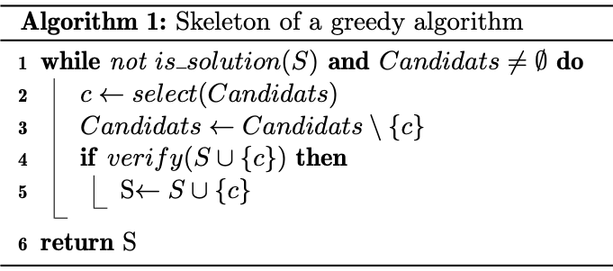

TP6 : Algorithmes gloutons¶
Note
Les objectifs du TP :
Concevoir des algorithmes gloutons pour résoudre des problèmes d’optimisation depuis un squelette.
Se libérer du squelette pour avoit un code plus concis.
Implémenter ces algorithmes en Python.
Principe des algorithmes glouton¶
Il existe une famille de problèmes dits d’optimisation. Voici quelques exemples :
Une loutre est au bord d’une rivère en train de pêcher des poissons pour sa famille, les poissons ne pèsent pas tous le même poids et ont des valeurs caloriques différentes. La loutre veut maximiser le nombre de calories qu’elle va rapporter sachant qu’elle ne peut porter qu’au plus \(10\) kilos de poisson.
Un voyageur de commerce doit organiser sa tourner et passer voir chaqu’un de ses clients, qui se trouvent tous dans des villes différentes, puis rentrer chez lui. Il souhaite minimiser la longueur de son traget.
Un distributeur automatique de boisson doit pouvoir rendre la monnaie aux clients. On souhaite minimiser le nombre de pièces utiliser.
Un gymnase doit acceuillir différentes activités, chacune avec une durée spécifique. Il s’agit ici de maximiser le nombre d’activités proposées.
Il existe plusieurs stratégies pour résoudre ce type de problème, parmi lesquelles : la programmation dynamique et les algorithmes gloutons. Nous traiterons la programmation dynamique plus tard et nous allons nous intéresser à la seconde stratégie.
Un algorithme classique pour résoudre un problème d’optimisation repose sur le backtracking, qui consiste lorsque l’on est devant plusieurs possibilités à toutes les tester. Ainsi, pour chaque possibilité il faut la tester et si la solution générale n’a pas été trouvée il faut revenir en arrière pour en tester une autre.
Un algorithme glouton, quant à lui, résoud un problème pas à pas en faisant localement le choix qu’il estime optimal, sans jamais revenir en arrière à tord ou à raison. Il espère ainsi trouver la solution globalement optimale. Pour se faire il doit disposer d’une relation de comparaison sur les choix possibles à chaque étape et d’une fonction de sélection de la meilleure.
Plus précisément on doit disposer :
d’un ensemble de candidats
Candidats;d’une fonction de sélection,
select, qui permet de choisir le meilleur candidat à ajouter à la solution;d’une fonction de vérification,
verify, qui vérifie si un ensemble de candidats est constructible;d’une fonction
is_solutionqui teste si notre ensemble de candidats forme une solution.
La stratégie gloutonne peut alors s’écrire :
Dans certains cas cette stratégie donnera effectivement la solution optimale, on parle dans ce cas d’algorithme glouton exact, dans d’autres cas non, on parle alors d’heuristique gloutonne.
Par exemple pour le problème de la loutre, imaginons que nous ayons le choix entre trois poissons Candidats = [(2, 6),(4, 10),(6, 12), un poisson étant donné par un couple (poids en kg, calories en Mcal). Si la loutre ne peut pas découper (fractionner) les poissons, une stratégie gloutonne serait :
\(select\) retourne le poisson qui maximise le rapport énergie/poids parmi les Candidats.
\(verify\) vérifie que le la somme des poids des poissons sélectionnés est inférieur à \(10\) kilos.
\(is\_solution\) vérifie qu’il n’existe plus de poisson à ajouter à la sélection sans dépasser les dix kilos.
Dans ca cas la solution construite ne sera pas optimale, en effet le premier poisson ajouté à la solution est le poisson (2,6), le second et dernier sera (4,10). La solution construite apportera \(16\) Mcal, alors que la solution optimale est donnée par [(4, 10),(6, 12)], qui apporte \(22\) Mcal.
Si la loutre peut découper les poissons, la statégie donne une solution optimale.
Il faut bien comprendre que ces problèmes d’optimisation sont très compliqué à résoudre exactement. Pour beaucoup d’entre eux, ils sont NP-complets, voir NP-difficiles. Si bien que l’on de connait pas d’algorithmes capables de donner la solution exacte en un temps raissonable (ils sont tous de complexité exponentielle). Donc trouver une “bonne solution” même si ce n’est pas la meilleure en un temps raisonnable est déjà très satisfaisant.
Le voyageur de commerce¶

Note
Un voyageur de commerce doit organiser sa tourner et passer voir chaqu’un de ses clients, qui se trouvent tous dans des villes différentes, puis rentrer chez lui. Il souhaite minimiser la longueur de son traget.
Il est clair que localement une des meilleures solutions est toujours la prochaine ville la plus proche. La stratégie gloutonne sera donc :
\(select\) retourne la ville la plus proche;
\(verify\) vérifie que la ville est accessible directement depuis la position actuelle du voyageur;
\(is\_solution\) vérifie que l’on est bien passé par toutes les villes et que l’on est bien rentré à la maison.
Il est clair que l’algorithme glouton ne donnera pas toujours une solution optimale, rarement même. Mais il a l’avantage d’être assez rapide et assez simple à mettre en ouvre.
Une version simplifiée¶
Note
Pour simplifier le problème nous supposerons, que toutes les villes sont reliées entre elles. Ce qui nous permettra de nous passer de la phase de vérification par la fonction verify.
On dispose comme entrée d’une liste villes comportant des tuples correspondants au coordonnées cartésiennes des villes, ainsi que de l’indice de la ville de départ. Notre algoritme devra fournir la liste trajet des indices des villes dans l’orde dans lequel il faut les visiter pour minimiser le trajet.
Nous utiliserons un vecteur de marques pour représenter les candidats disponibles. On départ candidats = [True] * len(villes), lorsque la ville villes[i]`aura était visitée on modifiera :code:`candidats[i] = False.
Exercice : Ecrire une fonction de signature distance(pos1: tuple[float,float], pos2: tuple[float,float])->float, qui à partir des coordonnées de deux villes retourne la distance qui les sépare.
Solution
from math import sqrt def distance(pos1, pos2): return sqrt((pos1[0]-pos2[0])**2 + (pos1[1]-pos2[1])**2)
Exercice : Ecrire une fonction select(pos: int, candidats: list[bool], villes: list[tuple[float, float]])->int, qui retourne l’indice dans villes de la ville la plus proche de notre position actuelle qui soit encore non visitée.
Solution
def select(pos, candidats, villes): n = len(villes) i = 0 while not candidats[i]: # On recherche la première ville non visitée i += 1 d_min = distance(villes[pos], villes[i]) i_min = i for j in range(i+1,n): if candidats[j]: d_tmp = distance(villes[pos], villes[j]) if d_tmp < d_min: d_min = d_tmp i_min = j return i_min
Exercice : Ecrire une fonction is_solution(trajet: list[int], nb_villes: int)->bool qui teste si notre trajet est complet (il contient toutes les villes et sont dernier élement est notre point de départ).
Solution
def is_solution(trajet, nb_villes): return len(trajet) == nb_villes+1 and trajet[0]==trajet[nb_villes-1]
Exercice : Ecrire la fonction trajet_glouton(villes: list[tuple[float,float]], start: int)->list[int] qui met en place notre stratégie gloutonne pour résoudre le problème.
Solution
def trajet_glouton(villes, start): n = len(villes) candidats = [True] * n candidats[start] = False trajet = [start] pos = start while not is_solution(trajet, n) and sum(candidats) != 0: pos = select(pos, candidats, villes) candidats[pos] = False trajet.append(pos) if sum(candidats) == 0: trajet.append(start) return trajet
Exercice : Modifier la fonction trajet_glouton pour qu’elle retourne en plus la distance parcourue lors du trajet. Il faudra aussi modifier la fonction select. Essayez votre fonction sur plusieurs exemples.
Solution
def trajet_glouton(villes, start): n = len(villes) candidats = [True] * n candidats[start] = False trajet = [start] pos = start d_totale = 0 while not is_solution(trajet, n) and sum(candidats) != 0: pos, d = select(pos, candidats, villes) d_totale += d candidats[pos] = False trajet.append(pos) if sum(candidats) == 0: trajet.append(start) d_totale += distance(villes[pos],villes[start]) return trajet, d_totale
Exercice à traiter à la maison : Ecrire une fonction brute_force(villes: list[tuple[float, float]], start: int)->trajet qui résoud le probblème du voyageur de commerce par force brute, c’est-à-dire en essayant toutes les permutations de l’ensemble des villes.
Exercice à traiter à la maison : Utiliser le décorateur @timing du TP2 pour comparer les temps d’exécution des deux algorithme sur des listes de villes tirées au hasard.
Rendu de monnaie¶

Note
Un distributeur de boisson doit pouvoir rendre la monnaie, et on souhaite qu’il le fasse en utilisant le moins de pièces possible. Si nous souhaitons utiliser le moins de pièces possible, il semble que la meilleure stratégie locale est d’utiliser à chaque étape la pièce de plus grande valeur que l’on puisse rendre.
On suppose que l’on dispose d’une liste pieces qui contient des listes de deux éléments [val, nb] qui représentent la valeur de la pièce et le nombre dont on en dispose. On supposera de plus que les valeurs des pièces sont triées dans l’ordre décroissant. Par exemple :
pieces = [[2,3],[1,2],[0.5,10],[0.2,3],[0.1,10],[0.05, 10],[0.02, 2],[0.01, 5]]
Le but est de retourner un tuple constitué de la liste des pièces à utiliser pour rendre la monnaie et du code \(1\), ou de la liste vide et du code \(-1\) si c’est imposssible.
Ce problème est NP-complet dans le cas général, c’est-à-dire avec un ensemble de pièces de valeurs quelqconques. Dans le cas d’un système monaitaire canonique notre algorithme sera optimal.
Warning
Vous le savez Python nous réserve bien des surprises lorsque l’on travaille avec des flottants… Aussi je vous conseille de travailler en centimes pour pouvoir utiliser des int…
Exercice : Ecrire la fonction is_solution(S: list[float], a_rendre: float)->bool qui teste si la liste S est une solution du problème qui consiste à rendre a_rendre.
Solution
def is_solution(S, a_rendre): return a_rendre == sum([100*k for k in S])
Exercice : Ecrire la fonction select(pieces: list[list[float,int]]):->int qui retourne l’indice de la pièce de plus grande valeur dont nous disposons encore, s’il existe et \(-1\) sinon.
Solution
def select(pieces): n = len(pieces) i = 0 while i < n and pieces[i][1] == 0: i += 1 if i != n: rep = i else: rep = -1 return rep
Exercice : Ecrire la fonction verify(S: list[float], a_rendre: float, val_piece):->bool qui teste si l’on peut adjoindre la pièce sélectionnée par select à notre solution.
Solution
def verify(S, a_rendre, val_piece): return a_rendre-int(100*val_piece) >= sum([int(100*k) for k in S])
Exercice : Ecrire la fonction rendu_glouton(pieces: list[float], a_rendre: float):->tuple[list[float],int] qui résoud le problème du rendu de monnaie.
Solution
def rendu_glouton(pieces, a_rendre): S = [] a_rendre = 100*a_rendre possible = True while not is_solution(S, a_rendre) and possible: i = select(pieces) if i < 0: possible = False else: pieces[i][1] -= 1 if verify(S, a_rendre, pieces[i][0]): S.append(pieces[i][0]) if possible: rep = S, 1 else: rep = [], -1 return rep
Exercice : Réécrire une fonction rendu_glouton2(pieces: list[float], a_rendre: float):->tuple[list[float],int] qui utilise le même principe d’algorithme glouton mais qui se détache du squelette rigide que je vous ai présenté, et qui tient en une dizaine de lignes.
Solution
def rendu_glouton2(pieces, a_rendre): S = [] a_rendre = int(100*a_rendre) for piece in pieces: while int(100*piece[0]) <= a_rendre and piece[1] > 0: piece[1] -= 1 S.append(piece[0]) a_rendre = a_rendre - int(100*piece[0]) if sum(S) == a_rendre: rep = S, 1 else: rep = [], -1 return S, sum(S)
Formation d’un comité restreint d’experts¶
{kind=link}
Note
Darth Vader souhaite envoyé un commando spécial de troopers sur Kashyyyk exécuter une mission top-secrète. Cette mission ne pourra réussir que si les troopers selectionnés présentent en groupe un ensemble de compétences spécifiques dont celles des forest-troopers, des incinerator-troopers, des scout-troopers, des snipers-trooper, des SCAR-troopers etc…
Pour des raison de confidentialité et de furtivité une fois déployé sur place le commando doit être formé du moins de troopers possible.
Il faut l’aider à choisir parmi un certain nombres de candidats le commando le plus restreint possible qui présentera toutes les compétences recquises par la mission.
Les compétences nécessaires seront numérotées de \(0\) à \(n\). Et chaque candidat sera représenté par l’ensemble de ses compétences, une partie de \(E\). On suppose que l’ensemble des compétences de tous les candidats réunis recouvre l’ensemble de celles souhaitées.
Ce problème est un problème de recouvrement.
On peut facilement élaborer une stratégie gloutonne pour le résoudre. Si \(E = \{0,\dots,n\}\) et si l’on dispose des troopers \((S_j)_{1\leq j\leq p}\) tels que \(E = \bigcup_{j=1}^p S_j\) , on forme notre commando \(C\) en choisissant à chaque étape un \(S_j\) qui recouvre le plus de compétences qui nous manquent encore, c’est-à-dire tel que \(Card(S_j\cap \left(E\setminus\bigcup_{i\in C}S_i\right)\) soit maximal.
Pour implémenter l’algorithme on utilisera des set, c’est-à-dire des ensembles en python.
On déclare des ensensembles en posant par exemple A = set([2,3,4]) et B = set([1,3,5]), les opérations de base sont la réunion, l’intersection et la différence qu’on obtitent respectivement par A | B, A & B et A - B.
Exercice : Ecrire la fonction commando_vader(E: set, T: list[set])->list[int], qui prend comme argument l’ensemble E a recouvrir, et la liste T des troopers \(S_j\) dont on dispose et qui retourne la liste des matricules (indices) des troopers formant le commando.
Solution
def select_next_trooper(U, T, C): dispo = set(range(len(T))) - set(C) j_max = min(dispo) m = len(U & T[j_max]) for i in dispo: tmp = len(U & T[i]) if tmp > m: m = tmp j_max = i return j_max def commando_vader(E: set, T: list[set])->list[int]: needed_comp = E commando = [] while len(needed_comp) != 0: j = select_next_trooper(needed_comp, T, commando) print(j) needed_comp = needed_comp - T[j] commando.append(j) return commando